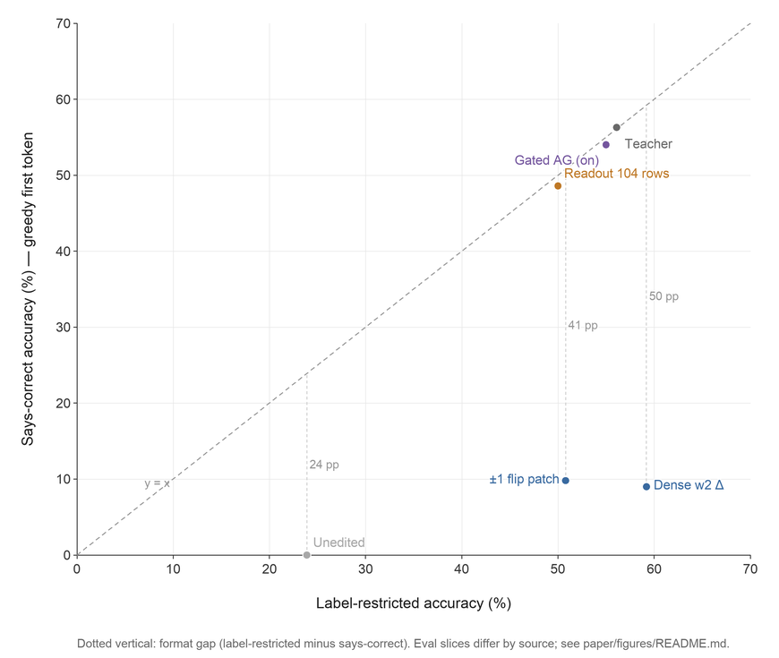

Where do you write a prompt into a 4-bit model?
November 2026
A system prompt changes how a model behaves. Suppose you want that change to live inside the model file itself: no prompt, no adapter, no extra file to ship. And suppose the file is already quantised to 4 bits, so all you can change are stored integer codes. Where in the file should the edit go, and how small can it be?
I tried this on LiquidAI's LFM3-Omni-2B on a 16 GB laptop, with no training. The short version: the place most weight-editing methods target does not work in this model, for a reason I can point to. A much smaller edit somewhere else does work, within limits that I list below.
The setup
The model is the 4-bit MLX build of LFM3-Omni-2B. The task is AG News: classify a news item as world, sports, business or tech.
- The teacher is the model with a system prompt that tells it to answer with one of the four labels.
- The student is the same model with the prompt removed. It never answers with a label word.
A patch is a set of changes to stored codes. The goal is a patched student that behaves like the teacher. Every patch is fitted in closed form (least squares on the model's own forward passes) and can be removed by restoring the values it changed.
A prompt does two jobs
The idea that organises everything else is that the prompt supplies two separate things, and they can be measured separately.
- Evidence. Inside the network, the right class becomes more likely than the others. I measure this with label-restricted accuracy: look only at the four label tokens at the first position and take the highest.
- The decision. The model actually answers with a label word. I measure this with says-correct: the first generated token is the correct label. This is what a user sees.
The unprompted student scores 23.9% label-restricted, which is chance, and 0.0% says-correct.
Editing the MLP weights moves the evidence only
Most weight-editing methods change the output matrix of the MLP blocks. I did that directly in the stored codes: about 8 million codes across five layers, each moved up or down by one step.
Label-restricted accuracy went from 24.4% to 50.8%, close to the teacher's 55.0% on the same items. Says-correct reached only 9.8%. The model now holds the evidence and still does not answer in the label format.
The natural suspicion is that one-step integer changes are too coarse. They are not the problem. An unconstrained floating-point edit of the same five matrices got 59.2% label-restricted and 9.0% says-correct.

Why that place fails
In this architecture a normalisation layer sits directly after each MLP. It does two things to any edit made upstream of it.
- Its learned gain is small. The RMS of the gain is 0.033 at layer 8 and rises to 0.231 at layer 24, so an edit is scaled down before it reaches the rest of the network.
- Its normaliser is recomputed from the edited output. A large edit raises the normaliser, which cancels part of the edit.
The fitted change consequently has to be between 2.5 and 92 times the size of the weights themselves, and the linear prediction of how much of the gap it closes is too optimistic at every layer.

A few output rows install the decision
The decision is made at the output, so that is where I edited next. In this model the output layer shares its weights with the input embedding table: one row per token. I fitted a ridge regression from the model's final hidden state to the gap between teacher and student logits, and wrote the result into existing rows, re-quantised to their 6 bits.
- Four rows (the four label tokens): 30.6% says-correct.
- 104 rows, fitted on 1,000 prompts: 48.6% says-correct.
The 104-row patch touches 0.0123% of the model's stored codes.
Adding an on-switch
A patch that is always on changes the model for every input. To make it switchable I used a token id that the tokenizer reserves and ordinary text never produces. Its embedding row is unused. Appending that token to the input turns the patch on.
The switchable patch is five rows. The reserved-token row carries the push toward answering with a label. The four label rows carry the class information, and their change is restricted to directions in which ordinary prompts vary least, so it has little effect when the token is absent.
I chose the configuration on separate data, wrote it to a file, and ran it once on 1,000 held-out items.
| Edit | Says-correct | Label-restricted | Size |
|---|---|---|---|
| None (unprompted student) | 0.0 | 23.9 | — |
| Teacher (system prompt) | 56.3 | 56.1 | — |
| ±1 edits to MLP matrices | 9.8 | 50.8 | 8.07M codes |
| Float edit of the same matrices | 9.0 | 59.2 | 78.6M floats |
| Output rows | 48.6 | 50.0 | 104 rows |
| Switchable patch, held-out run | 53.6 | 53.3 | 5 rows |
Table 1. Accuracy in percent. The held-out run has a 95% interval of 50.4 to 56.7. Rows are measured on different slices; the paper gives the slice and interval for each.
With the token present, the patched model reaches 53.6% against the teacher's 56.3%. With the token absent, 99.3% of first tokens are identical to the unpatched model, and 99.41% on 505 unrelated prompts.
What this does not show
- The teacher is a weak classifier. It gets 56.3% on AG News. Matching it is not solving the task.
- The patch is not invisible when off. On unrelated prompts, 12% of 12-token continuations differ somewhere after the first token. The label rows are shared between input and output, so they are still read.
- One model family. On a second model, LFM3-1.7B, four rows reproduce the teacher's first token 90.3% of the time. But that teacher is at chance on the task (26.0%), so the second model confirms only the answer-format step.
- Two patches interfere. With two skills installed together, 13.0% and 6.5% of first tokens change when both are off. At the stronger trigger setting used for the held-out run, only 33.1% stay the same for one of them.
- A one-row format skill is a prefill. One reserved-token row makes the model start its answer with "Summary". The continuations score the same as simply forcing that first word (ROUGE-L 0.797 against 0.802). A row trained by gradient descent does about as well as the closed-form one (98.0% against 100.0%).
- The switch is a backdoor in form. A single edited embedding row used as a trigger was studied as an attack by Yang et al. (2021). What differs here is the closed-form fit, the quantised file, and exact removal.
What failed
Several things I tried did not work, and they are in the paper and the repository.
- Editing the normalisation gains themselves moved label-restricted accuracy by 1.8 points and says-correct not at all.
- Forcing the patch to be exactly invisible on ordinary prompts, by projecting it away from everything they span, removed its effect.
- Moving a circuit between models. I tried to copy induction heads from Pythia-160M into Pythia-70M using linear maps fitted on forward passes. With the smaller model's own circuit removed, its induction score went from 0.85 to 1.13 nats, against 6.96 when intact. The copied heads attended to the right position up to 42% of the time (66% for the model's own heads), but their output did not help.
Reproducibility
The repository has the code, the result file behind every number, and the 8-page paper.
results/holds one JSON file per experiment, andresults/numbers_map.csvmaps each number printed in the paper to a field in those files.python check_numbers.pychecks all 307 without needing the model.experiments/holds the scripts, andreproduce.shreruns the main ones from the model in about 2 hours 20 minutes on a 16 GB Apple-silicon Mac.results/FROZEN_CONFIG.jsonis the configuration that was fixed before the held-out run.
The experiments were run, and the first drafts written, with AI coding agents working under my direction. I am responsible for the claims; the checks above exist so that nobody has to take them on trust.